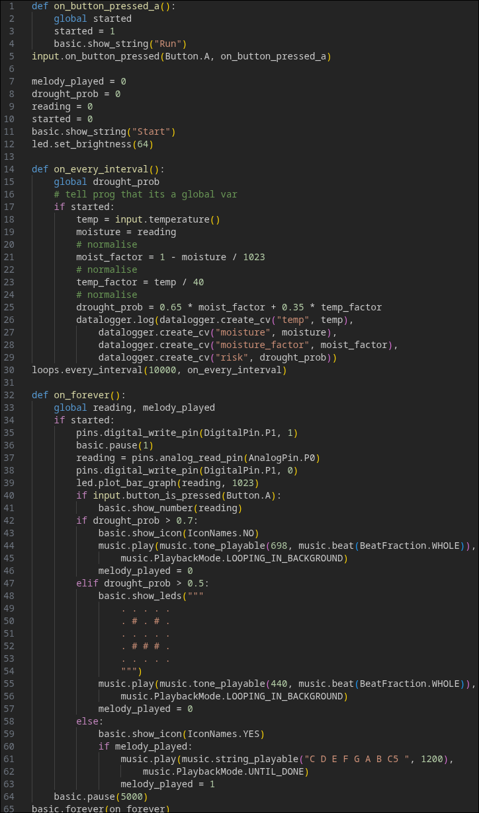

Meeting the Brief
Video demonstration will go here.
Basic Requirements
- For the first basic requirement, the digital input used was a button on the physical embedded system which turned it on and the analogue input was the thermometer built into the micro:bit.
- The second basic requirement asked for data collection - this gets completed by a datalogger on the micro:bit and it gets stored to a localised CSV file
- With the third basic requirement, I used real time calculations based off immediately collected data - after normalising the information, the micro:bit would display a symbol indicating whether the drought in the soil was probable.
Advanced Requirements
- AR 1
- AR 2
- AR 3
Design
system architecture, sensors used and flowchart
Implementation
development process + challenges encountered
Testing
This systemw as thoroughly tested by... !
If I had more time..
If I had more time available to work on the project, I would have liked to implement a water guage system to measure how absorbant soil is.
References
- W3Schools HTML
- W3Schools CSS
- Micro:bit Setup for Moisture
- Lots of googling
- Previous projects like this
- Python CSV Guide
- Basic Requirement 2 Guide - Danny Murray
- VS-Code Site Preview for QOL
- Primarily for the navbar
Code
